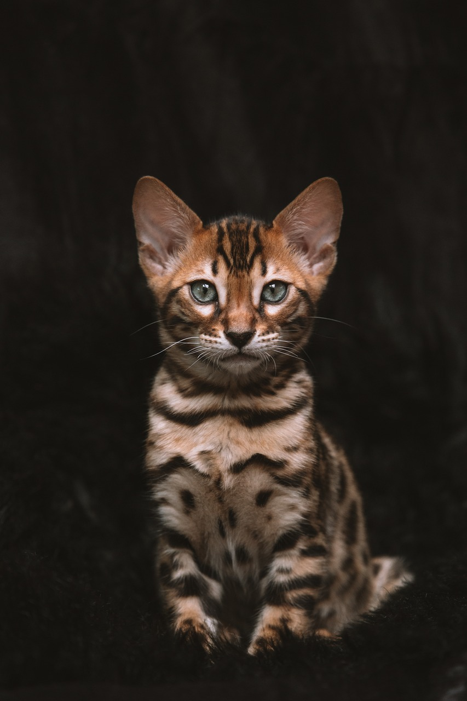
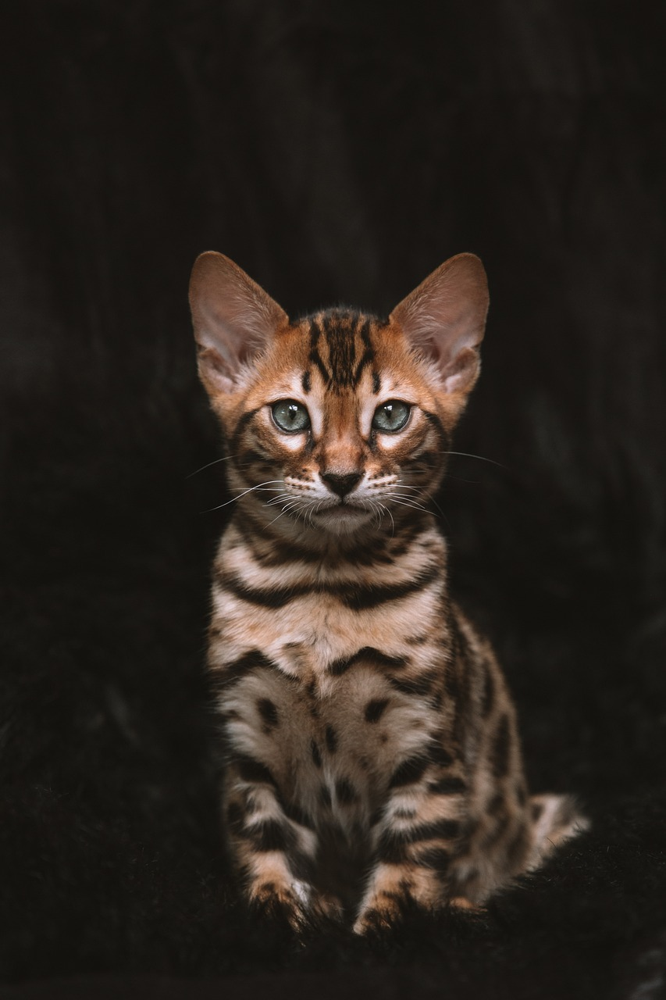

Everything you need to know about cats

Cats are fascinating, independent animals known for their agility, curiosity, and unique personalities.
Domesticated for thousands of years, cats remain natural hunters with keen senses, especially sight and hearing.
They communicate through a combination of body language, purring, and vocalizations, each with distinct meanings.
Proper care for cats includes a balanced diet, regular vet check-ups, and safe, engaging environments to support their natural instincts.
Cats also need social interaction, mental stimulation, and occasional grooming to keep them happy and healthy.
They can form strong bonds with their owners and often bring joy with their playful and sometimes quirky behaviors.
More pictures of cats


 
